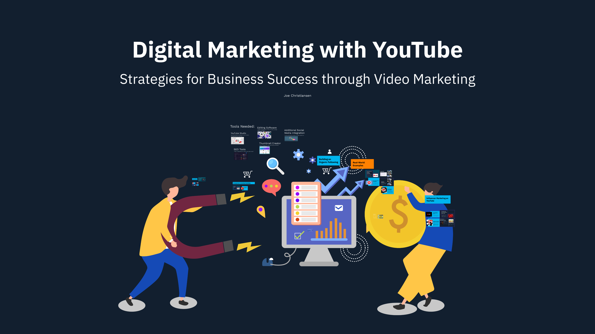

Digital Marketing
Exploring the Power of YouTube in Digital Marketing Strategy

Project Overview
This project focused on how to strategically use YouTube as a tool for digital marketing. My presentation explored topics like setting up and optimizing a branded YouTube channel, creating SEO-friendly content, using YouTube ads, growing an audience, and tracking analytics for better decision-making. It was a hands-on way to learn about the real-world application of digital video marketing strategies.
Presentation

View PresentationReflection
This project gave me a much clearer understanding of how important YouTube is in today's marketing world. I learned that it’s not just about uploading videos — it's about creating content that connects with the right audience, using SEO techniques, and paying close attention to how YouTube's algorithm works. Setting up a professional, branded channel is key, but so is keeping viewers engaged with quality content.
Working on this project also helped me realize the importance of using data and analytics. In digital marketing, guessing isn’t enough — you have to track views, engagement, watch time, and other key metrics to really know what's working. The skills I learned here, from optimizing videos to planning advertising strategies, are ones I can carry into real marketing campaigns in the future.